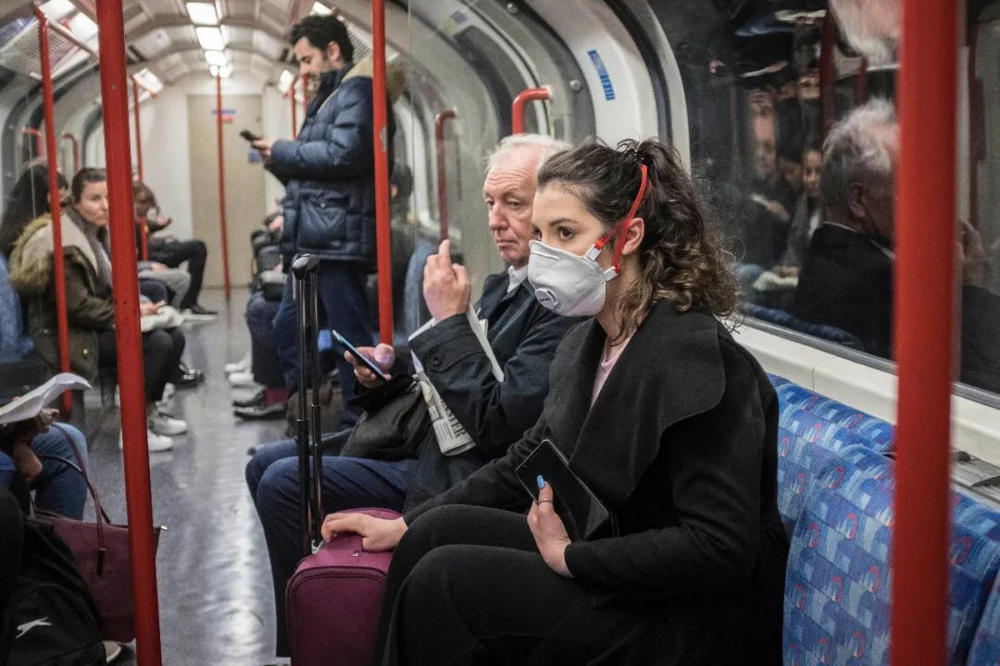
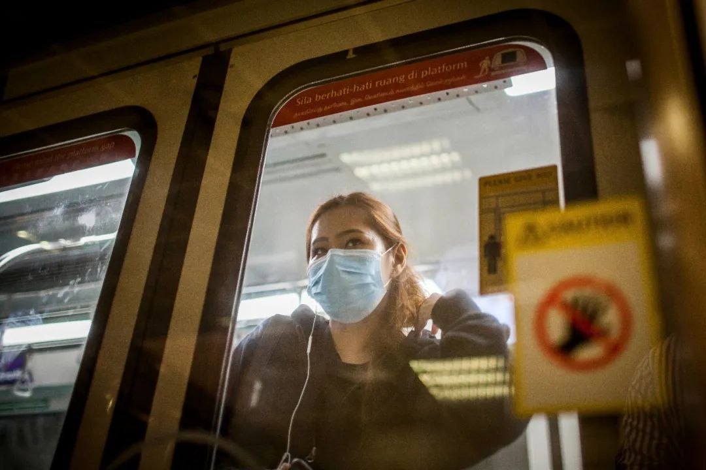
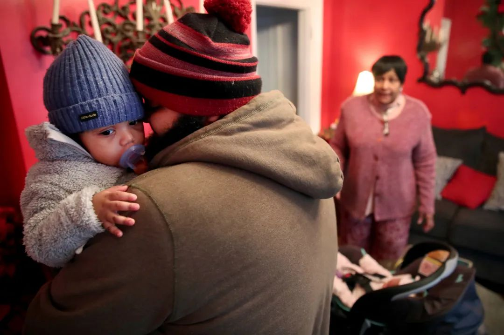

特朗普改口不提“中国病毒”，承诺保护亚裔群体
原文链接 备份链接 图片来源：白宫推特 记者 | 肖恩 “ “特朗普每提一次‘中国病毒’，美国社会的仇外情绪就会增加一分。” ” 特朗普改口了。 3月23日晚，在白宫举行的例行新冠肺炎疫情新闻发布会上，一名《华盛顿邮报》记者抓拍到了一个细 …
全球性危机的解决
只有全球合作才能解决

点击图片，一键下单
「*全球抗疫 惟有合作*」
记者 | 刘周岩 郜超
实习记者 | 张佳婧
在意大利刚刚“封国”的那段时间，喜爱歌舞的意大利人将他们平日里的露天音乐会搬到阳台上举行。钢琴、小提琴、小号的演奏，混杂着锅碗瓢盆的叮叮当当声。而现在，浪漫的意大利人也停止了歌唱。居住在贝加莫的费德里卡（Federica）告诉本刊，和过去一个星期相比，“贝加莫安静了下来，没有人歌唱了。”
取而代之的，是3月20日晚上8:45响起的教堂钟声。那一刻，小镇上的人们都停止了自己的活动，为这次在疫情中离世的人们点上蜡烛，默默地哀悼。
在寻常，按照意大利的传统，逝者入殓以后，棺材停放在家中两日，亲朋好友相继前往哀悼。而后，棺材会被送往教堂，举行公开的葬礼，神父为其祈祷，小镇上的邻里前来追送。疫情爆发以后，新冠死者的遗体也有传染风险，连家人也无法和他们见上最后一面。
根据意大利《共和报》对伦巴第大区的殡葬业者的报道，往日，殡葬业者会为死者整理仪容、化好妆。但现在，他们被要求不得接触遗体。这让不少殡葬业者感到难过，在病毒面前，似乎人与人之间最后的连接都被切断了。3月18日晚，70辆军车开进贝加莫，带走市内公墓和殡葬业再无力承担后事的新冠死者遗体，带他们去往他乡安葬或火化。
3月17日，意大利防疫人员在比萨斜塔附近消毒。
人类将要面临传染病大流行，这不是什么新闻。比尔·盖茨在2015年的一次演讲被人们反复传看：“当我还是孩子的时候，我们最担心的灾难是核战。”“但今天，如果有任何会在接下来几十年时间里杀死超过1000万人的东西的话，最可能的不是战争，而是传染性很强的病毒。”盖茨笃定地说：“不是导弹，而是微生物。”
盖茨基金会北京代表处首席代表李一诺告诉本刊，盖茨当年的那次演讲以及此后多次发出的“预言”，很大程度上是基于对2014年埃博拉疫情的反思。“很难说当时人类‘战胜’了埃博拉，只能说我们‘幸运’。埃博拉虽然致死率高，但它不像呼吸系统传染病——只要病人呼吸或咳嗽就可能把疾病传染给别人。而现在的新冠肺炎病毒不仅可以通过空气传播，更因为它是一种未知的新病毒，所以是真正可怕的疾病。而现在，它来了。”李一诺说。
如今重看以免疫学闻名的澳大利亚病毒学家、诺贝尔奖获得者伯内特爵士（Sir McFarland Burnett）在1962年的结论：“二战结束的时候，几乎所有传染病的实际问题都已经解决了”，难免惹人唏嘘。**20世纪医学的重大突破给了人类自信，21世纪，才发现“潘多拉魔盒”一直敞开。既然早有预感，又为何如此措手不及？
**

人们在庙宇祈祷
迟来的警报
1月23日武汉“封城”，中国以行动向世界发出了明确信号——封锁一座千万人口的都市，这是现代防疫史上从未有过的举措，欧洲对疫情信号明显迟滞，已成公论。
如果说大量信息中难免“噪声”太多，单一国家为避免假警报频繁拉响而按兵不动情有可原。谁又该承担起识别关键威胁、并以权威声音告知各国做出何种程度应对的职责？
“WHO对本次全球大流行（pandemic）的宣布太迟了，这毫无疑问影响了许多国家的决定和行动”，汤胜蓝教授告诉本刊。汤胜蓝曾在WHO总部工作并任WHO驻华代表处高级项目官员，参与执笔WHO对中国医改的建议书，目前是美国杜克大学医学院讲席教授。此外对新冠肺炎是否“人传人”以及对各国的旅行限制建议等问题上，今天回看，汤胜蓝认为，科学证据之外的各种因素对WHO的早期建议影响较大。

3月11日，世界卫生组织宣布将新冠疫情定义为“全球大流行病”。
单个国家政府能否肩负起领导责任？美国正在远离问题的答案。刘士永教授从历史的角度说明，WHO的鼎盛时期恰与冷战经验重叠，今天WHO的境况不过是单极世界衰落的一个表征，“WHO有影响的时期从上世纪五十年代开始，一直到八十年代前期，背后有美国的全面支配。”如今，新的国际秩序尚在形成之中，《未来简史》作者赫拉利将今天称之为一个“领导者缺失的世界”。他写道：“美国留下的空白尚未被任何人填补。恰好相反，仇外心理、孤立主义和不信任是现在大多数国际体系的特征。”
欧洲构建着自己的马奇诺防线，病毒则从背后绕过。当2月14日，意大利一位与中国无直接联系的本土“1号病人”马蒂亚（Mattia）先生被确诊感染新冠病毒，欧洲疫情蔓延也拉开序幕。
迎战未知
从2月14日第一次就医，直到20日才进行新冠病毒检测，马蒂亚一直被当做常规流感和肺炎治疗，错失宝贵时机。仅三次就医过程，他直接感染了自己的多位亲朋、造成严重院感，社区传播大范围扩散。事后，意大利总理孔特承认接收马蒂亚的医院早期工作出现失误。
《大流感》一书作者、对历史上的传染病有深入研究的约翰·巴里（John Barry）教授告诉本刊，**疫情之所以首先在意大利而不是其他欧洲国家爆发，他认为偶然因素很大，如果马蒂出现在其他欧洲国家，恐怕结果类似。
**

3月19日，意大利医护人员正在抢救新冠肺炎患者。
孟乔来荷兰前是广州一知名三甲医院的放射科医生，目前在荷兰莱顿大学医学中心进修，攻读放射科博士，这是荷兰93所医院中8家水平最高的大学医学中心之一。她告诉本刊，2月27日放射科主任跟其他同行开会，把她叫过去了解情况，这才详细了解到新冠病毒的传染性很强。“我跟他们讲科室要设置专用CT，只扫描新冠病人，还要分好污染区、半污染区、清洁区，他们之前都没有这个概念。这几位主任是很敬畏的，他们说中国有应对SARS的经验，但荷兰什么相关经验都没有，所以要虚心学习。”
与医院应对方案逐步推进对应的，是各国的社会管控措施在矛盾中调整。意大利作家贝佩·塞韦尔尼尼（Beppe Severgnini）写文章称，如果用一个词形容大多数意大利人初识新冠一个月的心情，不是恐惧、不是悲伤，而是：困惑。“家家户户的晚餐桌上的情绪和观点摇摆着：我们究竟是对一个有点恼人的大号流感过度敏感了，还是在面对严重传染病大流行，有足够的理由去担心？”
约翰·巴里告诉本刊，新冠病毒之可怕并不在于其烈性，它给我们带来的最大的麻烦恰恰在于：一个不过分高也不过分低的死亡率——既会造成麻烦又留下足够犹豫空间；与已知疾病类似的症状——让人们误认并混淆；高传播性——利用为自己争取到的宝贵时间扩散开来。

3 月13 日，土耳其伊斯坦布尔的防疫人员在周五礼拜前为清真寺消毒。
医学史专家、上海交通大学特聘教授刘士永认为，欧洲的医疗系统之所以出现了这样的问题，与近几十年间“重预防医学，轻公共卫生”的趋势有关。“上世纪80年代以后，预防医学进步非常快，欧洲政府大量投资。但相比于传统的公共卫生，预防医学有效的前提是需要知道敌人是谁——我们从小接种的那么多疫苗，这么多药物、病毒学研究，都是针对已知传染病。而一旦遭遇未知疾病，预防医学的迟缓性和风险性就非常高。公共卫生的一些基本手段，例如对水质、食品、卫生习惯等的管理和培养，则是没有特定敌人的，这第一道防线不能丢。至于美国，更是预防医学占有主要资源。”
疫情发生后，美国的两位民主党总统候选人桑德斯与拜登发生了一场辩论。桑德斯批评美国的高度市场化的医疗体系，呼吁实施全民健保，拜登则表示，意大利就是最好的反例——免费医疗照样崩溃。美国与意大利，分别是医疗资源较好的发达国家中市场化医疗与全民健保的典型代表，同时陷入困境，指示问题不在简单的医疗资源“充沛”与否，或是运营方式，而是关乎整体医疗思路和体系建设。
耶鲁大学全球健康政策与经济学助理教授、美国中国卫生政策与管理学会会长陈希告诉本刊，过去十年，各国的疾控和防疫投资不断减少，美国尤其严重。至今年二月，美国为此付出代价，在新冠病毒检测试纸的研发、生产和人员培训等各环节捉襟见肘。陈希认为：“公共卫生是一个‘自己革自己命’的领域，做得越完善，各方越认为对其投入过多，继而缩减经费。”
科学能否拯救
英国的“群体免疫”引发轩然大波，牛津大学流行病学家陈铮鸣教授告诉本刊，这次事件是一个“表达不当”造成的沟通事故。英国首席科学顾问帕特里克·瓦伦斯爵士（Sir Patrick Vallance）向BBC如此解释英国抗疫思路的核心：“如果你一定要强行压制（suppress），疫情会反弹——在错误的时间反弹。”背后的假设是，毕其功于一役地消灭病毒已经不可能，只能打持久战。
直到3月16日开始，约翰逊政府在隔离、检测、停止商业活动等一系列方面宣布收紧政策，到3月21日，英国政府宣布关闭所有学校。人们在问：英国放弃了自己的“淡定”，或者终于“幡然醒悟”了吗？

2月14日，乘坐地铁通勤的伦敦民众。
陈铮鸣教授认为，英国政策不存在转折的问题，前后是一致的，将约翰逊政府理解为“前松后紧”或是“妥协”属于误读。“政策正是因为要依据科学结论做出，所以才在不同时间点根据情况不断调整。持久战需要考虑对民生的影响，一下弄得百业凋零也不行，会有次生灾害，就像一个天秤的两头，需要不断调找平衡点。例如关校问题，关早了怎么办——很多家长是医务人员、应急工作人员，他们如果留在家里照看孩子，同样不利于应对疫情。组合拳怎么打，太早、太猛，打错了激起反弹，适得其反，这些在历史上都有深刻的教训。”
莱顿大学医学中心放射诊断学教授约翰尼斯·布洛姆（Johannes Bloem）也告诉本刊，如果将干预政策分为三类：不干预、完全隔离、减少社会互动，那么所有欧洲国家选择的都是最后一种。他认为荷兰采取策略实际上不晚，早于其他欧洲国家，但荷兰也只是疫情传播较意大利晚了18天，否则一系列措施无效的话，“荷兰最终将陷入与意大利和西班牙相同的严重局面”。表面上看起来欧洲各国之间策略不同，陈铮鸣也认为没有本质的差异，都是依据模型做推演、匹配医疗资源和防疫措施，只是现阶段疫情爆发情况不同而已。
“统计数字的使用，在二十世纪初变得更为重要。今天我们用图表上的曲线来显示疾病传播的速度。统计数字的使用，与洲际通信、疾病的细菌理论一起，共同创造了我们对流行病的现代概念。”《流行病与现代世界》一书作者米切尔·哈蒙德（Mitchell Lewis Hammond）向本刊解释。
3月21日，新加坡市一名通勤途中戴着口罩做防护的年轻女性。
只不过，从来不存在着一个统一的“科学”——英国推出其策略后，英国免疫学会会长联合多位知名学者质疑政府策略。英国的策略关键在于时机的细微调控，以取得收益平衡，但何为“好时机”？不同的数据模型有不同的结果。眼下，决策所仰赖的一些最基本的数据都还是不确定的，例如德国与意大利的死亡率相差达28倍，无论再怎样考虑人口老龄化、医疗水平的不同，这其中也一定有数据统计方式差别和误差的原因。
检测方面，因为各国重点检测对象不同，相关数据也差别较大。一些更根本的数据还没有，陈铮鸣举例，英国正在尝试将检测范围扩大至健康人群，因为只有把大量的感染后又自愈的人进入统计，才可能真正调查清楚新冠肺炎病毒的传播模式。
至于科学真正的“解药”——疫苗，据一般观点，至少还要等到明年年中。
风险社会
《大流感》的作者约翰·巴里告诉本刊，如果以新冠病毒再写一部类似的书，他觉得最重要的章节现在还没发生——幕布刚刚拉开。“病毒很有可能正在发展中国家悄悄蔓延，它们会以自己的方式显现。”约翰·巴里说。对于中国和其他亚洲的发达地区——除了日本，巴里对于日本的数据十分怀疑——现在只是“开始的结束”，西方还没到这一步，但是真正的可能灾难会发生在第三世界。现在统计上仍呈相对空白的非洲、东南亚、拉美，很可能因为检测与统计的问题而被忽视。
早在上世纪80年代，德国社会学家乌尔里希·贝克提出了“风险社会”的概念：全球化的不断加深，便利之外，极大地增加了系统性风险。贝克认为，在前工业时代，灾难被认为是同自然本身紧密相连的，所以，人类并不需要对灾难负责。但是，现代社会的风险更多地同人类的决策相关。

3月17日，美国波士顿一居民到育儿所接孩子，由于疫情，育儿所的孩子越来越少，都被接回家照顾。
至于今天的疫情大爆发，陈希认为，“每一个政府都慢了半拍，每一个时间窗口内，都没有解决问题。中国的预警首先失灵，但随后采取了在人类卫生史上都堪称非凡的举措，留与世界机会，但世界未能抓住。美国在1月末停航中国，客观而言很理性。但现在推算，美国的社区传播始于更早，这种形势下，停航后美国国内的隔离、检测未能跟进。两国停航之时，中国与其他各国交通依旧，美国也未有效应对旅客输入，最终沦陷。”
李一诺认为，本次疫情要求我们对公共卫生体系进行重新定位与思考。对于新发传染病的防治，人们不应受限于在医疗系统内部分配有限资源的思维，而要上升到国家安全的高度来考量。虽然平日也不打仗，但每个国家仍然要保有精兵强将，人们对此毋庸置疑。
类似的，我们也要建设高效的疾病监测系统。更何况其价值不仅仅体现在重大疫情暴发期间，即便在日常公共卫生工作中，疾病监测系统也能发挥重大作用，并不会“浪费”。而做到这一点，就要求要预先投资——短期似乎看不到成效，但长远来看却有着极高的投资回报。此外，“病毒无国界，传染病大流行面前任何国家都不可能独善其身，因此建立多边的迅速有效的国际协作和反应机制也是至关重要”。

2月26日，美国总统特朗普与疾病控制与预防中心官员在华盛顿举行关于新冠病毒的新闻发布会。
贝克的风险社会理论中，全球性危机的解决，只有全球合作才能解决。这次疫情中，拒绝协作的国家已经交了学费。陈希告诉本刊，检测是美国命门，其决定疫情数据的准确性，之后所有的建模、分析、政策均以此为基础。美国的重大失误是——拒绝使用德国研制的成熟的检测试纸，过于遵循本国标准，但自研的试纸直至今天仍有瑕疵，只能仓促投用，产量和分配始终短缺。
哈蒙德教授说，历史地看，也不必全然悲观，“尽管大流行可能会带来巨大的变化，但社会是有弹性的。危机之后，人们有能力恢复正常生活。例如，1918-1919年西班牙大流感爆发，伴随其后的却是‘咆哮的二十年代’（roaring Twenties），社会空前繁荣，文化充满活力。”《世界是平的》作者托马斯·弗里德曼已经以本次新冠疫情作为新的历史纪元分界点——历史将会被分成新冠以前和新冠以后。
本期封面专题中，我们采访医务工作者、公共卫生领域专家、国际组织成员和各国民众，系统梳理了近期国际疫发展，试图对近两个月的全球历史进行合理阐释。我们具体分析了意大利、美国、新加坡三国的例子，同时从欧洲各国不同社会文化、科学上的“零号病人”概念和新冠病毒与1918大流感比较等方面进行了探讨。《未来简史》作者赫拉利和哲学家齐泽克，也向本刊独家授权刊发他们关于本次新冠疫情的最新思考。
（实习记者田钟灵、孙一丹、印柏同对本文亦有贡献。孟乔为化名）

更多精彩报道详见本期新刊
「*****全球抗疫 惟有合作*****」
点击图片，一键下单
**本期更多精彩
**
| 封面故事 |
全球抗疫 惟有合作
尤瓦尔·赫拉利：在疫情中，我们将创造怎样的世界？
齐泽克：我们置身其间的全球性景观
欧洲战疫：且战且调整（刘周岩 郜超 张佳婧）
意大利抗疫：共识与策略（刘周岩 张佳婧）
美国防疫方式及其错失的机会（刘怡）
新加坡防疫：一场长远之战（李秀莉）
文化习俗对抗击病毒的影响（薛巍）
新冠病毒的另一种结局（袁越）
零号病人（袁越）
| 社会 |
时事：和平难至，“双包案”困扰阿富汗（刘怡）
热点：上海防疫的新阶段：以闭环应对输入（杨璐）
| 经济 |
| 文化 |
电影：网络电影的“窗口期”（宋诗婷）
收藏：金石古欢之趣（薛芃）
城景：格里高蒂：从旧城到新城（唐克扬）
| 专栏 |
邢海洋：按“热搜”种菜
苗千：争议中的哈勃常数
袁越：新冠病毒为什么这么厉害？
卜键：函馆谈判
宋晓军：美陆军把“改革首秀”放在亚洲的意义
朱德庸：大家都有病
本期《三联生活周刊》#封面大使#是牛津大学流行病学教授陈铮鸣。经历过2003年非典的陈铮鸣，对当时险些被当作疑似感染者的经历记忆犹新。然而对比今天，他认为这次新冠肺炎疫情也许是继1918年西班牙流感以来，人类面临的最大一次疫情的挑战。虽然在中国已经取得了良好的疾控成效，但是传播和反弹的风险仍然存在。作为命运共同体，人们只有协同合作，才能真正控制全球疫情的发展。而在这个过程中，我们没有人可以独善其身。
点击上图，听牛津大学流行病学教授陈铮鸣探讨全球疫情。
⊙文章版权归《三联生活周刊》所有，欢迎转发到朋友圈，转载请联系后台。
点击图片，一键下单
「***全球抗疫 惟有合作*」**
***************▼ 点击阅读原文，******************************进入周刊书店******************************，购买更多好书***************。
原文链接 备份链接 图片来源：白宫推特 记者 | 肖恩 “ “特朗普每提一次‘中国病毒’，美国社会的仇外情绪就会增加一分。” ” 特朗普改口了。 3月23日晚，在白宫举行的例行新冠肺炎疫情新闻发布会上，一名《华盛顿邮报》记者抓拍到了一个细 …
原文链接 备份链接 记者 | 王磬 “ 仍然受到公民隐私、个人自由、公私域边界等“制约”的欧洲政府，危机之下显得笨拙、吃力、蹑手蹑脚，像是一个行动迟缓的老人，坚守着一套旧世界的标准，却早已被新世界的浪潮甩在身后。 ” 我在阿姆斯特丹的家门 …
原文链接 备份链接 作者近照 【作者按】截止2020年3月21日美东时间晚7点，美国总确诊人数25730人，死亡311人。纽约州是疫情重灾区，11727人确诊，60人死亡。华盛顿州1793人确诊，94人死亡。加州1370人确诊，24人死 …
原文链接 备份链接 体坛周报全媒体驻意大利记者 陈硕麟 新冠疫情下，医疗能力在世界范围内本是顶尖水平的意大利却成为了重灾区，在这个过程中，意大利究竟犯了哪些错误？ 1.疫情前期排查有漏洞，延误大量时间 “1号病人”2月21号确诊时，已经出 …
原文链接 备份链接 国内多地周一重现早高峰。国际奥组委确认正式考虑延期举办东京奥运会。疫情令美国经济处在悬崖边缘。意大利对中国专家组的建议照单全收。 文 |《财经》数据研究员 徐进 图 |《财经》视觉中心 编辑 | 郝洲 一、国内多地 …